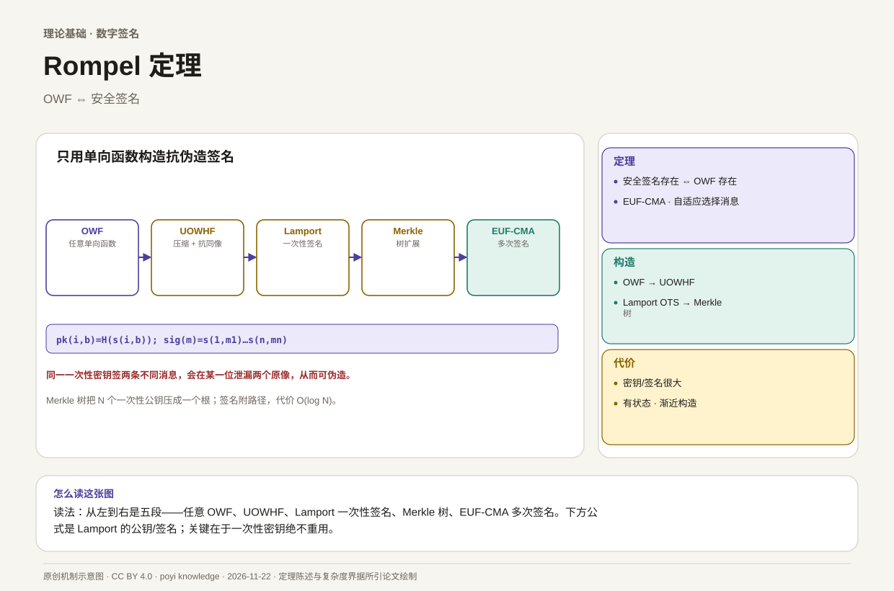
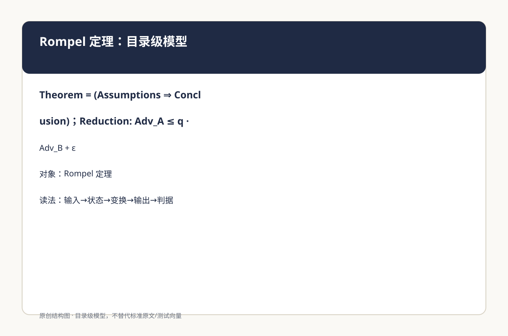

原理与机制
定理：Rompel 定理（OWF Implies Digital Signatures）。### 单向函数足够造签名
Rompel 定理：安全数字签名存在，当且仅当单向函数存在。必要性直接：签名方案本身可导出单向函数（例如把公钥或消息映射成难以求逆的串）；难点是充分性：只给一个任意 OWF，如何造出抗自适应选择消息伪造的签名。### 三层构造
1.OWF → UOWHF。通用单向哈希函数（UOWHF）压缩长消息，且给定一个原像后难以找到同像的另一原像。Rompel 证明任意 OWF 都能构造 UOWHF。2.UOWHF → 一次性签名。Lamport 一次性签名把消息每一位映射到两个秘密串；公钥是它们的散列。签名揭示每位对应的一个秘密串，验证重新散列。3.一次性签名 → 多次签名。Merkle 树把 N 个一次性公钥作为叶子，根作为总公钥；每次签名附上叶子公钥、一次性签名和到根的路径。### Lamport 的代数
私钥 s_{i,b}←{0,1}^n，公钥 pk_{i,b}=H(s_{i,b})。消息 m 的签名是 (s_{1,m_1},…,s_{n,m_n})。验证：对每个 i 计算 H(s_{i,m_i}) 并与 pk_{i,m_i} 比较。同一密钥签两条不同消息，会在某个不同位泄漏两个原像，攻击者可伪造第三条消息。

为什么重要
公钥加密需要陷门，签名却不需要：Rompel 说明签名可以只建立在 OWF 上。它把 Lamport 的一次性签名、Merkle 的树和 Naor–Yung 的 UOWHF 组合成一个完整的 EUF-CMA 方案。### 对今天的影响
哈希签名（XMSS、LMS、SPHINCS+）都沿着“一次性签名 + 树”这条路。Rompel 的定理给出理论保证：即使没有 RSA/ECC，只要有 OWF，就能签名；后量子时代这尤其重要。
应用与实例
- 理论：证明 OWF 是签名的充分必要条件；为哈希签名提供归约骨架。- 工程：Lamport/Merkle 的一次性签名与树结构用于代码签名、区块链、后量子签名候选；实际方案优化了密钥/签名尺寸和状态管理。- 读法：先看一次性签名是否只用一次，再看树是否覆盖所有叶子，最后看 UOWHF 是否抗同像。Rompel 的原始构造是渐近的；它不是 ECDSA 的替代品，而是“没有数论假设也能签名”的存在性证明。

边界与攻击面
1.效率极低。Lamport 公钥含 2n 个散列，签名为 n 个秘密串；Merkle 树再加 log N 个节点。实际部署需要优化或换用更紧凑的哈希签名。2.有状态。Merkle 树签名必须记录已用叶子；重复使用叶子会破坏一次性安全性。无状态方案（如 SPHINCS+）用不同的树/随机化来避免状态。3.UOWHF 构造复杂。Rompel 的证明很长，且原会议论文的若干论证后来被指出有错误；Katz–Koo 2005 才给出完整重写。不能把“OWF→UOWHF”当成一行代码。4.安全归约损失。树高、消息长度与哈希族参数都会进入界；具体参数要按方案的安全目标计算。5.不是公钥加密。OWF 足以签名，但不足以构造公钥加密；后者仍需陷门。“哈希签名因此绝对安全”不成立。它依赖 OWF/哈希的抗碰撞或抗第二原像假设，并依赖一次性密钥不被重用；实现错误仍会破坏安全。
历史与背景
Lamport 1979 提出一次性签名；Merkle 1979 提出用树把一次性签名扩展为多次签名；Naor–Yung 1989 用 UOWHF 构造签名。Rompel 1990 在 STOC 上证明任意 OWF 都能构造 UOWHF，从而完成 OWF→签名的链条。### 后续与修正
Rompel 的会议论文影响很大，但若干证明细节长期没有完整发表；Katz 与 Koo 在 2005 年给出完整重写，并指出原论文中的一些错误。哈希签名后来进入 NIST 后量子标准进程（SPHINCS+ 等），这条路线在今天比 1990 年更现实。
技术参数与复算边界
该条目的形式模型是 (\Pr[\mathrm{Bad}_A(\lambda)]\le \varepsilon(\lambda))。输入：输入：Rompel 定理的公开参数、密钥/随机数与消息；变量说明：Bad 为归约中定义的失败事件，ε 为可忽略函数。 预期输出：按 Rompel 定理 的规范执行后得到可验证的输出或可比较的优势界。 复算必须给出输入、步骤、输出和单位；示例只演示流程，不替代标准测试向量。
复杂度由密钥长度、分组/状态规模、轮数、随机数质量和敌手模型共同决定；参数越界、版本差异与实现侧信道都可能使公式结论失效。已登记限制：该条目只给出形式模型与可复算步骤，不声称已完成生产实现、侧信道认证或第三方安全评估。
逐步示例与核验
形式模型与复算步骤
[\Pr[\mathrm{Bad}_A(\lambda)]\le \varepsilon(\lambda)]
Rompel 定理的公开参数、密钥/随机数与消息；变量说明：Bad 为归约中定义的失败事件，ε 为可忽略函数。1.定义失败事件。2.构造归约把攻击者转成困难问题求解器。3.证明失败概率上界。边界：公式只覆盖已登记的参数与假设；参数取值、标准版本和实现细节仍以来源为准。
参考出处
- Wikipedia search entry for Rompel 定理. https://zh.wikipedia.org/w/index.php?search=Rompel%20%E5%AE%9A%E7%90%86
- Handbook of Applied Cryptography (Menezes, van Oorschot, Vanstone). https://www.cacr.math.uwaterloo.ca/hac/